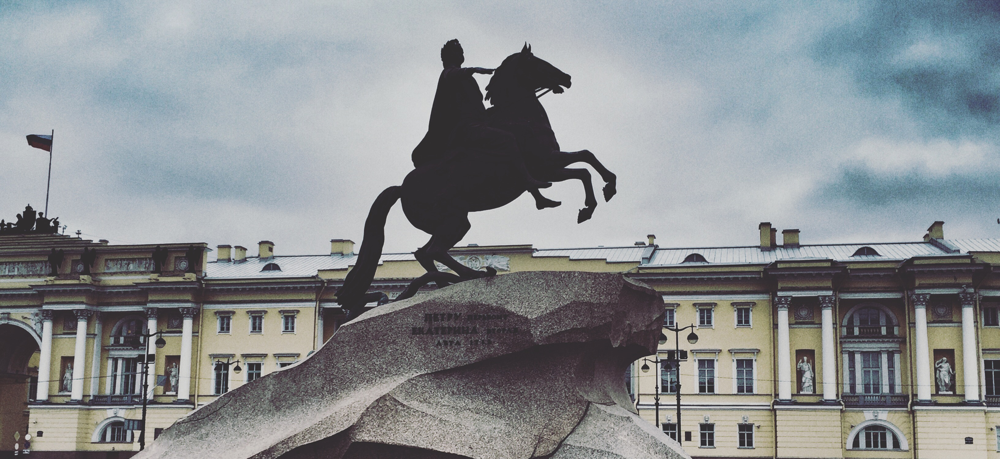

The Bronze Horseman, Saint Petersburg (2018)
Modernization theory
Tensions in modernization theory (structuralist approaches)
Contingency in democratization
Definitions of democracy
Democracy and development
Democracy and regime type
Patterns of democracy
Historical democratization
Corrupt structures
Corrupt actors
Definitions of the state
The emergence of the state out of society
Challenges to state formation
State capacity
Ironies of state-building
Origins of federalism
Fiscal federalism
Federal party systems
Subnationalism
State-nations
Nationalism
Ethnicity
Public goods provisions
Mobilization
Religion
Social theories of protest
Resistance and mobilization
Revolution
Early theories of political parties
Regional party systems
Electoral system choice
Presidentialism vs. parlamentarism
Weighting the debate
Legislatures and regime type
Populist parties
Markets in society
Markets in the state
Globalization and capitalism
Institutions
Varieties of capitalism (VoC)
Critiques of VoC
Welfare state and “power resource” theory
Modernization theory
Limits of modernization theory
Theories of backwardness
Effects of backwardness
Developmental State
Varieties
East Asia
Africa
Post-communist transitions
China
Challenges to development
Globalization and development
Re-visiting the developmental state
Philosophies of social science
Concept formation
Examples of typologies
Institutionalisms
Quantitative
Qualitative
Regime Dynamics
Dallin (1992) — Causes of the Collapse of the USSR
Shevtsova (1996) — Parliament and Political Crisis in Russia, 1991-1993
Bunce (1999) — Subversive Institutions: The Design and the Destruction of Socialism and the State
McFaul (2001) — Russia’s Unfinished Revolution: Political Change from Gorbachev to Putin
Beissinger (2002) — Nationalist Mobilization and the Collapse of the Soviet State
Breslauer (2005) — Regimes of Political Consolidation: The Putin Presidency in Soviet and Post-Soviet Perspective
Fish (2005) — Democracy Derailed in Russia: The Failure of Open Politics
Shleifer and Treisman (2005) — A Normal Country: Russia After Communism
Smyth et al. (2007) — Engineering Victory: Institutional Reform, Informal Institutions, and the Formation of a Hegemonic Party Regime in the Russian Federation
Sakwa (2010) — The Dual State in Russia
Krastev & Holmes (2012) — An Autopsy of Managed Democracy
Gel’man (2015) — Authoritarian Russia: Analyzing Post-Soviet Regime Change
Shevstova (2015) — The Authoritarian Resurgence: Forward to the Past in Russia
Gel’man & Starodubtsev (2016) — Opportunities and Constraints of Authoritarian Modernization: Russian Policy Reforms in the 2000s
Colton (2018) — Regimeness, Hybridity, and Russian System Building as an Educative Project
Fish (2018) — What Has Russia Become?
Taylor (2018) — The Code of Putinism
Treisman, Ed. (2018) — The New Autocracy: Information, Politics, and Policy in Putin’s Russia
Smyth (2019) — Elections, Protest, and Regime Stability in Non-Democratic States: Russia, 2008-2018
Electoral Dynamics
Hale (2006) — Why Not Parties in Russia?
Gel’man (2008) — Party Politics in Russia: From Competition to Hierarchy
Remington (2008) — Patronage and the Party of Power: President–Parliament Relations Under Vladimir Putin
Reuter and Remington (2008) — Dominant Party Regimes and the Commitment Problem: The Case of United Russia
Golosov (2011) — The Regional Roots of Electoral Authoritarianism in Russia
Enikolopova et al. (2012) — Field Experiment Estimate of Electoral Fraud in Russian Parliamentary Elections
Reuter and Robinson (2012) — Subnational Appointments in Authoritarian Regimes: Evidence from Russian Gubernatorial Appointments
Gel’man (2013) — Cracks in the Wall: Challenges to Electoral Authoritarianism in Russia
Golosov (2013) — Proportional Representation and Authoritarianism: Evidence from Russia’s Regional Election Law Reform
Robertson (2013) — Protesting Putinism: The Election Protests of 2011–2012 in Broader Perspective
Frye, Reuter, and Szakonyi (2014) — Political Machines at Work: Voter Mobilization and Electoral Subversion in the Workplace
Reuter et al. (2016) — Local Elections in Authoritarian Regimes: An Elite-Based Theory With Evidence From Russian Mayoral Elections
Reuter & Beazer (2016) — Who’s to Blame? Political Centralization and Electoral Punishment under Authoritarianism
Gorokhovskaia (2017) — Testing for Sources of Electoral Competition under Authoritarianism: An Analysis of Russia’s Gubernatorial Elections
Reuter (2017) — The Origins of Dominant Parties: Building Authoritarian Institutions in Post-Soviet Russia
Gorokhovskaia (2018) — From Local Activism to Local Politics: The Case of Moscow
Peisakhin, Rozenas & Sanovich (2018) — Mobilizing Opposition Voters under Electoral Authoritarianism: A Field Experiment in Russia
Reuter & Szakonyi (2018) — Elite Defection under Autocracy: Evidence from Russia
Szakonyi (2018) — Businesspeople in Elected Office: Identifying Private Benefits from Firm-Level Returns
Frye, Reuter, & Szakonyi (2019) — Hitting Them With Carrots: Voter Intimidation and Vote Buying in Russia
Frye, Reuter, & Szakonyi (2019) — Vote Brokers, Clientelist Appeals, and Voter Turnout: Evidence from Russia and Venezuela
Lankina & Tertytchnaya (2020) — Electoral Protests and Political Attitudes under Electoral Authoritarianism + Protest in Electoral Autocracies: A New Dataset
Szakonyi (2020) — Politics for Profit: Business, Elections, and Policymaking in Russia
Social Dynamics
Hale (2011) — The Myth of Mass Russian Support for Autocracy: The Public Opinion Foundations of a Hybrid Regime
Volkov (2012) — The Protesters and The Public
Chaisty and Whitfield (2013) — Forward to Democracy or Back to Authoritarianism? The Attitudinal Bases of Mass Support for the Russian Election Protests of 2011–2012
Treisman (2014) — Putin’s Popularity Since 2010: Why Did Support for the Kremlin Plunge, Then Stabilize?
Gontmakher & Ross (2015) — The Middle Class and Democratization in Russia
Frye, Gelbach, Marquardt & Reuter (2017) — Is Putin’s Popularity Real?
Greene & Robertson (2017) — Agreeable Authoritarians: Personality and Politics in Contemporary Russia
Markus (2017) — The Atlas That has Not Shrugged: Why Russia’s Oligarchs are an Unlikely Force for Change
Tucker et al. (2017) — Detecting Bots on Russian Political Twitter
Forrat (2018) — Shock-Resistant Authoritarianism: Schoolteachers and Infrastructural State Capacity in Putin’s Russia
Frye (2018) — Economic Sanctions and Public Opinion: Survey Experiments from Russia
Greene (2018) — Running to Stand Still: Aggressive Immobility and the Limits of Power in Russia
Hale (2018) — How Crimea Pays: Media, Rallying ’Round the Flag, and Authoritarian Support
Tucker et al. (2018) — Turning the Virtual Tables: Government Strategies for Addressing Online Opposition with an Application to Russia
Zavadskaya (2018) — The New Norms of Protest Politics in Russia
Institutions
Ledeneva (2008) — Telephone Justice in Russia
Taylor (2011) — State Building in Putin’s Russia: Policing and Coercion after Communism
Ledeneva (2013) — Russia’s Practical Norms and Informal Governance: The Origins of Endemic Corruption
Ledeneva (2013) — Can Russia Modernize? System, Power Networks, and Informal Governance
Petrov & Titkov (2013) — Рейтинг Демократичности Регионов Московского Центра Карнеги: 10 Лет В Строю
Schleiter (2013) — Democracy, Authoritarianism, and Ministerial Selection in Russia: How Presidential Preferences Shape Technocratic Cabinets
Sharafutdinova (2013) — Gestalt Switch in Russian Federalism: The Decline in Regional Power under Putin
Paneyakha (2014) — Faking Performance Together: Systems of Performance Evaluation in Russian Enforcement Agencies and Production of Bias and Privilege
Hendley (2015) — Justice in Moscow?
Gel’man (2016) — The Vicious Circle of Post-Soviet Neopatrimonialism in Russia
Nistotskaya, Khakhunova & Dahlström (2016) — Expert Survey on the Quality of Government in Russia’s Regions
Gel’man (2017) — Political Foundations of Bad Governance in Post-Soviet Eurasia
Østbø (2017) — Demonstrations against Demonstrations: The Dispiriting Emotions of the Kremlin’s Social Media ‘Mobilization’
Sharafutdinova & Turovsky (2017) — The Politics of Federal Transfers in Putin’s Russia: Regional Competition, Lobbying, and Federal Priorities
Burkhardt & Libman (2018) — The Tail Wagging the Dog? Top-down and Bottom-up Explanations for Bureaucratic Appointments in Authoritarian Regimes
Goode (2018) — Russia’s Ministry of Ambivalence: The Failure of Civic Nation-Building in Post-Soviet Russia
Noble (2018) — Authoritarian Amendments: Legislative Institutions as Intraexecutive Constraints in Post-Soviet Russia
Petrov et al. (2018) — Agenda and Challenges for Putin’s New Term (*Russian Analytical Digest)
Historical Legacies
Lankina, Libman, & Obydenkova (2016) — Appropriation and Subversion: Precommunist Literacy, Communist Party Saturation, and Postcommunist Democratic Outcomes
Libman & Kozlov (2017) — The Legacy of Compliant Activism in Autocracies: Post-Communist Experience
Pop-Eleches & Tucker (2017) — Communism’s Shadow: Historical Legacies and Contemporary Political Attitudes
Finkel & Gelbach (2018) — Collective Action and Representation in Autocracies: Evidence from Russia’s Great Reforms
Kharkhordin (2018) — Republicanism in Russia: Community Before and After Communism
Foreign Policy
Lukyanov (2010) — Russian Dilemmas in a Multipolar World
Sarotte (2014) — A Broken Promise? What the West Really Told Moscow About NATO Expansion
Stent (2014) — The Limits of Partnership: U.S.-Russian Relations in the Twenty-First Century
Laruelle (2015) — Russia as a “Divided Nation,” from Compatriots to Crimea: A Contribution to the Discussion on Nationalism and Foreign Policy
Marten (2015a) — Putin’s Choices: Explaining Russian Foreign Policy and Intervention in Ukraine
Marten (2015b) — Informal Political Networks and Putin’s Foreign Policy: The Examples of Iran and Syria
Tsygankov (2015) — Vladimir Putin’s Last Stand: The Sources of Russia’s Ukraine Policy
Kotkin (2016) — Russia’s Perpetual Geopolitics
Laruelle (2016) — The Three Colors of Novorossiya, or the Russian Nationalist Mythmaking of the Ukrainian Crisis
Lukyanov (2016) — Putin’s Foreign Policy: The Quest to Restore Russia’s Rightful Place
Lomagin (2017) — A Cold Peace Between Russia and the West: Did Geo-Economics Fail?
Gunitsky & Tsygankov (2018) — The Wilsonian Bias in the Study of Russian Foreign Policy
Political Economy
Frye & Shleifer (1996) — The Invisible Hand and the Grabbing Hand
Hellman (1998) — Winners Take All: The Politics of Partial Reform in Postcommunist Transitions
Kotkin (2001) — Armageddon Averted: The Soviet Collapse, 1970-2000
Volkov (2002) — Who Is Strong When the State is Weak? Violent Entrepreneurs in Russia
Yakovlev (2006) — The Evolution of Business-State Interaction in Russia: From State Capture to Business Capture?
Aslund (2007) — How Capitalism Was Built: The Transformation of Central and Eastern Europe, Russia, and Central Asia
Treisman (2010) — Is Russia Cursed by Oil?
Cook (2013) — Postcommunist Welfare States: Reform Politics in Russia and Eastern Europe
Ross (2015) — What Have We Learned about the Resource Curse?
Miller (2016) — The Struggle to Save the Soviet Economy
Cook et al. (2017) — Russian Pension Reform under Quadruple Influence
Gans-Morse (2017) — Demand for Law and the Security of Property Rights: The Case of Post-Soviet Russia
Miller (2018) — Putinomics: Money and Power in Resurgent Russia
Remington (2018) — Russian Economic Inequality in Comparative Perspective
Formal Theory
Gelbach and Simpser (2015) — Electoral Manipulation as Bureaucratic Control
Rozenas (2015) — Office Insecurity and Electoral Manipulation
Rundlett and Svolik (2016) — Deliver the Vote! Micromotives and Macrobehavior in Electoral Fraud
Moser & White (2017) — Does Electoral Fraud Spread? The Expansion of Electoral Manipulation in Russia
Eastern Europe
Havel (1979) — The Power of the Powerless: Citizens Against the State in Central Eastern Europe
Kuran (1991) — Now Out of Never: The Element of Surprise in the Eastern European Revolutions of 1989
Jowitt (1992) — New World Disorder: The Leninist Legacy
Kitschelt (1992) — The Formation of Party Systems in East Central Europe
Evans & Whitefield (1993) — Identifying the Bases of Party Competition in Eastern Europe
Ekiert (1996) — The State Against Society: Political Crises and Their Aftermath in East Central Europe
Moser (1999) — Electoral Systems and the Number of Parties in Postcommunist States
Janos (2000) — East Central Europe in the Modern World: The Politics of the Borderlands from Pre- to Postcommunism
Zielonka, Ed. (2001) — Democratic Consolidation in Eastern Europe Volume 1: Institutional Engineering
Morje Howard (2002) — The Weakness of Postcommunist Civil Society
Ekiert (2003) — Patterns of Postcommunist Transformation in Central and Eastern Europe
Kitschelt (2003) — Accounting for Postcommunist Regime Diversity
Appel (2005) — Anti-Communist Justice and Founding the Post-Communist Order: Lustration and Restitution in Central Europe
Ganev (2005) — Post-Communism as an Episode of State Building: A Reversed Tillyan Perspective
Vachudova (2005) — Europe Undivided: Democracy, Leverage, and Integration After Communism
Gryzmala-Busse (2006) — The Discreet Charm of Formal Institutions: Postcommunist Party Competition and State Oversight
Conor O’Dwyer (2006) — Runaway State-Building: Patronage Politics and Democratic Development
Gryzmala-Busse (2007) — Rebuilding Leviathan: Party Competition and State Exploitation in Post-Communist Democracies
Krastev (2007) — The Strange Death of the Liberal Consensus
Rohrschneider & Whitefield (2009) — Understanding Cleavages in Party Systems: Issue Position and Issue Salience in 13 Post-Communist Democracies
Tavits & Letki (2009) — When Left Is Right: Party Ideology and Policy in Post-Communist Europe
Pop-Eleches (2010) — Throwing Out the Bums: Protest Voting and Unorthodox Parties after Communism
Grzymala-Busse (2011) — Why There Is (Almost) No Christian Democracy in Post-Communist Europe
Scheppele (2013) — The Rule of Law and the Frankenstate: Why Governance Checklists Do Not Work
O’Dwyer (2014) — What Accounts for Party System Stability? Comparing the Dimensions of Party Competition in Postcommunist Europe
Tismaneanu (2014) — Understanding 1989: The Revolutionary Tradition Revisited
Tóka (2014) — Constitutional Principles and Electoral Democracy in Hungary
Grzymala-Busse (2015) — Thy Will Be Done? Religious Nationalism and Its Effects in East Central Europe
Kitschelt (2015) — Analyzing the Dynamics of Post-Communist Party Systems
Kornai (2015) — Hungary’s U-Turn: Retreating from Democracy
Orenstein (2015) — Geopolitics of a Divided Europe
Rovny (2015) — Party Competition Structure in Eastern Europe: Aggregate Uniformity versus Idiosyncratic Diversity?
Scheppele (2015) — Understanding Hungary’s Constitutional Revolution
Dawson & Hanley (2016) — The Fading Mirage of the “Liberal Consensus”
Magyar (2016) — Post-Communist Mafia State: The Case of Hungary
Ahlquist, Ichino, Wittenberg & Ziblatt (2017) — How Do Voters Perceive Changes to the Rules of the Game? Evidence from the 2014 Hungarian Elections
Ekiert, Kubik, & Wenzel (2017) — Civil Society and Three Dimensions of Inequality in Post-1989 Poland
Grzymala-Busse (2017) — Hoist on Their Own Petards? The Reinvention and Collapse of Authoritarian Successor Parties
Grzymala-Busse (2017) — Populism and the Erosion of Democracy in Poland and in Hungary
Keleman (2017) — Europe’s Other Democratic Deficit: National Authoritarianism in Europe’s Democratic Union
Bogaards (2018) — De-Democratization in Hungary: Diffusely Defective Democracy
Bustikova (2018) — The Radical Right in Eastern Europe
Bustikova & Gusati (2018) — The State as a Firm: Understanding the Autocratic Roots of Technocratic Populism
Grzymala-Busse & Slater (2018) — Making Godly Nations: Church-State Pathways in Poland and the Philippines
Krastev & Holmes (2018) — Imitation and Its Discontents
Mares & Young (2018) — The Core Voter’s Curse: Clientelistic Threats and Promises in Hungarian Elections
Sadurski (2018) — How Democracy Dies (in Poland): A Case Study of Anti-Constitutional Populist Backsliding
Stanley (2018) — A New Populist Divide? Correspondences of Supply and Demand in the 2015 Polish Parliamentary Elections
Historical Legacies
Crawford & Lijphart (1995) — Explaining Political and Economic Change in Post-Communist Eastern Europe: Old Legacies, New Institutions, Hegemonic Norms, and International Pressures
Comisso (1995) — Legacies of the Past or New Institutions?: The Struggle Over Restitution in Hungary
Geddes (1995) — A Comparative Perspective on the Leninist Legacy in Eastern Europe
Hanson (1995) — The Leninist Legacy and Institutional Change
Ertman (1998) — Democracy and Dictatorship in Interwar Western Europe Revisited (*Review Article)
Thompson (2002) — Building Nations and Crafting Democracies: Competing Legitimacies in Interwar Europe
Ekiert & Hanson (2003) — Time, Space, and Institutional Change in Central and Eastern Europe
Bunce (2005) — The National Idea: Imperial Legacies and Post-Communist Pathways in Eastern Europe
Darden & Grzymała-Busse (2006) — The Great Divide: Literacy, Nationalism, and the Communist Collapse
Wittenberg (2006) — Crucibles of Political Loyalty: Church Institutions and Electoral Continuity in Hungary
Kopstein & Wittenberg (2010) — Beyond Dictatorship and Democracy: Rethinking National Minority Inclusion and Regime Type in Interwar Eastern Europe
Cramsey & Wittenberg (2010) — Timing Is Everything: Changing Norms of Minority Rights and the Making of a Polish Nation-State
Wittenberg (2013) — What is a Historical Legacy?
Charnysh (2015) — Historical Legacies of Interethnic Competition: Anti-Semitism and the EU Referendum in Poland
Wittenberg (2015) — Conceptualizing Historical Legacies
Charnysh & Finkel (2017) — The Death Camp Eldorado: Political and Economic Effects of Mass Violence
Ekiert & Ziblatt (2017) — Democracy in Central and Eastern Europe One Hundred Years On
Grosfeld & Zhuravskaya (2017) — Cultural versus Economic Legacies of Empires: Evidence from the Partition of Poland
Howe (2017) — Habsburg Legacies and the Fate of Consociationalism in Interwar Austria and Czechoslovakia
Lupu & Peisakhin (2017) — The Legacy of Political Violence across Generations
Rozenas et al. (2017) — The Political Legacy of Violence: The Long-Term Impact of Stalin’s Repression in Ukraine
Kopstein & Wittenberg (2018) — Intimate Violence: Anti-Jewish Pogroms on the Eve of the Holocaust
Simpser, Slater & Wittenberg (2018) — Dead But Not Gone: Contemporary Legacies of Communism, Imperialism, and Authoritarianism
Lankina & Libman (2019) — Soviet Legacies of Economic Development, Oligarchic Rule and Electoral Quality in Eastern Europe’s Partial Democracies: The Case of Ukraine
CPE
Offe (1991) — Capitalism by Democratic Design?
Kornai (1992) — The Socialist System: The Political Economy of Communism
Balcerowicz (1994) — Understanding Postcommunist Transitions
Hellman (1998) — Winners Take All: The Politics of Partial Reform in Postcommunist Transitions
Orenstein (1999) —How Politics and Institutions Affect Pension Reform in Three Postcommunist Countries
Tucker (2006) — Regional Economic Voting: Russia, Poland, Hungary, Slovakia, and the Czech Republic, 1990–1999
Boyle & Greskovits (2007a) — The State, Internationalization, and Capitalist Diversity in Eastern Europe
Boyle & Greskovits (2007b) — Neoliberalism, Embedded Neoliberalism and Neo-corporatism: Towards Transnational Capitalism in Central-Eastern Europe
Kaufman (2007) — Market Reform and Social Protection: Lessons from the Czech Republic, Hungary, and Poland
Greskovits (2014) — Legacies of Industrialization and Paths of Transnational Integration after Socialism
Johnson (2016) — Priests of Prosperity: How Central Bankers Transformed the Postcommunist World
Wilson Sohkey (2017) — The Political Economy of Pension Policy Reversal in Post-Communist Countries
Post-Communist Eurasia
Zielonka (1994) — New Institutions in the Old East Bloc
Linz & Stepan (1996) — Problems of Democratic Transition and Consolidation: Southern Europe, South America, and Post-Communist Europe
Frye (1997) — A Politics of Institutional Choice: Post-Communist Presidencies
Kopstein & Reilly (2000) — Geographic Diffusion and the Transformation of the Postcommunist World
Gryzmala-Busse & Luong (2002) — Reconceptualizing the State: Lessons from Post-Communism
Levitsky & Way (2002) — The Rise of Competitive Authoritarianism
Hale (2005) — Regime Cycles: Democracy, Autocracy, and Revolution in Post-Soviet Eurasia
Karatnycky (2005) — Ukraine’s Orange Revolution
McFaul (2005) — Transitions from Post-Communism
Way (2005) — Authoritarian State-Building and the Sources of Regime Competitiveness in the Fourth Wave: The Cases of Belarus, Moldova, Russia, and Ukraine
Bielasiak (2006) — Regime Diversity and Electoral Systems in Post-Communism
Bunce & Wolchik (2006) — International Diffusion and Postcommunist Electoral Revolutions
Darden (2007) — The Integrity of Corrupt States: Graft as an Informal State Institution
Bunce & Wolchik (2008) — Getting Real About “Real Causes”
Gel’man (2008) — Out of the Frying Pan, into the Fire? Post-Soviet Regime Changes in Comparative Perspective
Way (2008) — The Real Causes of the Color Revolutions
Birch (2011) — Post-Soviet Electoral Practices in Comparative Perspective
Radnitz (2011) — Informal Politics and the State (*Review Article)
Beissinger (2013) — The Semblance of Democratic Revolution: Coalitions in Ukraine’s Orange Revolution
Shukan (2013) — Intentional Disruptions and Violence in Ukraine’s Supreme Rada: Political Competition, Order, and Disorder in a Post-Soviet Chamber, 2006–2012
Pop-Eleches & Robertson (2014) — After the Revolution: Long-Term Effects of Electoral Revolutions
Hale (2015) — Patronal Politics: Eurasian Regime Dynamics in Comparative Perspective
Way (2015) — Pluralism by Default: Weak Autocrats and the Rise of Competitive Politics
Hale (2016) — 25 Years after the USSR: What’s Gone Wrong?
Lankina, Libman & Obydenkova (2016) — Authoritarian and Democratic Diffusion in Post-Communist Regions
Hanson (2017) — The Evolution of Regimes: What Can Twenty-Five Years of Post-Soviet Change Teach Us?
Libman and Obydenkova (2018) — Understanding Authoritarian Regionalism
Peisakhin & Rozenas (2018) — Electoral Effects of Biased Media: Russian Television in Ukraine
Central Asia
Anderson (1997) — Elections and Political Development in Central Asia
Collins (2004) — The Logic of Clan Politics: Evidence from the Central Asian Trajectories
Luong (2004) — Institutional Change and Political Continuity in Post-Soviet Central Asia
Cummings (2005) — Kazakhstan: Power and the Elite
Kurtov (2007) — Presidential Seat or Padishah’s Throne?: The Distinctive Features of Supreme Power in Central Asian States
Schatz (2009) — The Soft Authoritarian Tool Kit: Agenda-Setting Power in Kazakhstan and Kyrgyzstan
Radnitz (2010) — Weapons of the Wealthy: Predatory Regimes and Elite-Led Protests in Central Asia
Ziegler (2010) — Civil Society, Political Stability, and State Power in Central Asia: Cooperation and Contestation
Marat (2012) — Kyrgyzstan: a Parliamentary system Based on inter-elite Consensus
Ó Beacháin & Kevlihan (2015) — Imagined Democracy? Nation-Building and Elections in Central Asia
Spector (2017) — Order at the Bazaar: Power and Trade in Central Asia
Google “Dataset” Search Engine (Beta)
UNU Government Revenue Dataset
Comparative Taxation Dataset (1870-2001)
Financing the State: Government Tax Revenue (1800-2012)
Tax Introduction Database (TID)
Global Price and Income History Group (GPIH)
Varieties of Democratization (V-Dem)
Election Resources on the Internet
Russian Public Opinion Research Center (ВЦИОМ)
Фонда Общественное Мнение (Public Opinion Foundation)
Национальная Электронная Библиотека
Российская Национальная Библиотека (РНБ)
Электронная Библиотека Исторических Документов
The Eclectic, Erratic Bibliography on the Extreme Right in Western Europe
Ed Rubin’s Useful Links – “useful and/or interesting links for research/productivity/fun” and the inspiration for this website
The Calvert Journal – explore post-Soviet culture through music, art, literature, photography, and architecture
The Bell – more Russian news/politics delivered to your inbox
The Moscow Times’ Michelle Berdy Exploring the Russian Language – the ins-and-outs of Russian speech
The Village (in Russian) – what is going on in your favorite Russian city? today? tomorrow? this weekend?
Soviet Jokes Collected and De-Classified by the CIA – government-endorsed laughs
“Tips for talking about your work with people you run into in the hallway at conferences” – how to share your work with others by Hakeem Jefferson
Cable News for Young People: TikTok Politics
Putin’s People: How the KGB Took Back Russia and Then Took on the West by Catherine Belton (2020) (Review) (Review) (Review)
“Russian Internet Memes: The Short Course” by Eliot Borenstein, NYU Professor of Russian and Slavic Studies (2020) – Intro on the NYU Jordan Center YouTube Channel
Russia Z: Celebrating the voice and vision of a new creative generation
Пранк – Портрет Путина в Лифте – Жители подъезда в шоке – video
Between Two Fires by Joshua Yaffa Review – How Putin Rules Russia
Congratulations, You’re an Elected Russian Opposition Official! Now What?
Genya Turovskaya’s “The Breathing Body Of This Thought”
How Mikhail Mishustin Rose to the Top: Old Ties, Savvy and a Knack for Systems
Russia’s Role in Producing the Taxman of the Future
The Full Chernobyl Thread from Slava Malamud on Twitter (2019)
If God Is Dead, Your Time Is Everything (A Review of Martin Hägglund) New Yorker, May 2019
Khlebnikov, Tatlin, and the Utopian Geopoetics of the Russian Avant-Garde by Harsha Ram (17 January 2019)
Ilya Khrzhanovsky’s Dau has become one of the world’s most eagerly awaited and controversial film projects. Now the maverick director’s “experiment” has finally been unveiled in Paris, it’s time to ask: was it worth the trouble? from The Calvert Journal
Russian Youth: How Are They Different from Other Russians? by Maria Lipman & Denis Volkov (18 January 2019)
Фильм Андрея Лошака “Возраст несогласия” (все серии) LiveJournal
A Gentleman in Moscow by Amor Towles Review
European Party System Positioning data visualization from The Economist [December 1, 2018] with Chapel Hill Expert Survey data
The House of Government: A Saga of the Russian Revolution by Yuri Slezkine (2017) Review
The Cold War, Post-Cold War, and the Academy: An Oral History of Russian and Eurasian Studies on the Harriman Institute and multiple generations of Russian and Soviet historians and political scientists
Back To The Soviet Future collects the sci-fi covers of Soviet engineering magazine Technika Molodezhi
How Democracy Died in Hungary from Zack Beauchamp at Vox paints a vivid picture of a stark political reality
“What Identity Demands” in The New Yorker (September, 2018) problematizing Francis Fukuyama’s “thymos”
The European University at St. Petersburg is back in the pages of the New York Times “even after President Vladimir V. Putin signed three resolutions ordering officials to support the school” i.e. a wayward case study of ‘bureaucratic-authoritarianism’
Russia’s online prodigy female rapper Monetochka navigates post-post-modernism and issues a manifesto of metamodernism
Dressed Up for a Riot: Misadventures in Putin’s Moscow by Michael Idov
A Terrible Country by Keith Gessen
NPR Tiny Desk – discover new live music or listen to your favorite artists navigate the acoustic world! - Mumu Fresh Feat. Black Thought - Saba - Tom Misch - Common - Noname - Gallant - Goldlink - Lianne LaHavas - Chick Corea and Gary Burton - Gary Burton and Julian Lage - Stephane Grapelli - Goat Rodeo Sessions - Christian Scott aTunde Adjuah (2015) - Christian Scott aTunde Adjuah (2018) - Chance the Rapper - Anderson .Paak and The Free Nationals - Mac Miller - Leon Bridges - Punch Brothers - Alicia Keys - Roy Hargrove Quintet - Fakear - FKJ (2014) - FKJ (2019) - Bon Iver - Rhye - Jorja Smith - Elder Island - Lizzo - Hadestown - Nicki Nicole
BBC Radio 1Xtra – the UK is where radio is still alive and thrives
COLORS – “a unique aesthetic music platform showcasing exceptional talent from all around the globe, focused on promoting the most distinctive new artists” - James Vickery - Dennis Lloyd - Angèle - Parcels - Masego (2017) - Masego (2019) - Sampa the Great - Snoh Aalegra - Mahalia - Jaz Karis - James Vickery - Parcels - Angèle - Angèle feat. Roméo Elvis - Maggie Rogers - Vulfpeck - Luedji Luna
Music & Literature – formally post-modern scholarship on the intersections between music and literature
PennSound – find your favorite or an obscure poet read and discuss their work
Jacket2 – keep the pulse on modern and contemporary poetry and poetics
George Lakoff’s Blog – George Lakoff on cognitive science, linguistics, and the “moral politics” of the day
Lazarus Text Mixing Desk – paste in your text and let modernism do the rest